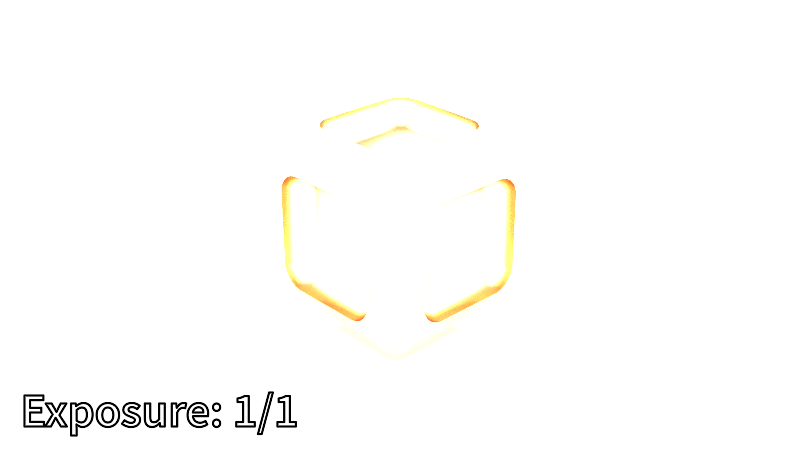

This release implements a new skylight model, tone mapping, and a simple keyframe animation system. This release also unifies all visualization systems under a single set of tools.
Hosek-Wilkie skylight model
Our previous lighting was a straightforward ad-hoc directional light which we defined as:
In this release, we replaced it with An Analytic Model for Full Spectral Sky-Dome Radiance by Lukas Hosek and Alexander Wilkie. This paper proposes a physically-based analytical model for dynamic daytime skydomes. We can now animate the sun's position in real-time and have the model produce realistic sunsets.
The authors wrote a brute-force path tracing simulation for gathering reference data on atmospheric scattering. They used this reference data to create the following model.
To evaluate the model, we query the model parameters and from the datasets provided by the authors. Since our renderer only supports RGB, we must use their RGB datasets.
The sky model runs fast enough to be interactive. Here's a short real-time demonstration:
Implementation details
The original implementation is implemented ~1000 lines of ANSI C. We could have built it into our Rust project, but we realized that most of the code was useless. We re-implemented the original C version into Rust with the following changes:
- We removed spectral and CIE XYZ data sets since our renderer only support RGB.
- We removed the solar radiance functionality since its API only supported spectral radiances. However, having a solar disc increases realism, so we might have to revisit this later.
- We removed the "Alien World" functionality since we are only concerned with terrestrial skies.
- We switched from double-precision to single-precision computations and storage. Reduced precision did not seem to have any visual impact and performed better than doubles.
- The model state size went down from 1088 bytes to only 120 bytes.
With these changes, our implementation ended up being just ~200 LOC of Rust.
Simple exposure control

With the new skylight model, we now have a problem: the scene is too bright. We can scale the brightness down by a constant factor called , which we are going to define as:
We apply this scaling to every pixel as the final step of the render.
Tone mapping
We can make the image "pop" more with tone mapping, which is a technique for mapping high-dynamic range (HDR) images into low-dynamic range (LDR) to be shown on a display device. Our implementation uses the "ACES Filmic Tone Mapping Curve," which is currently the default tone mapping curve in Unreal Engine. More specifically, we used Krzysztof Narkowicz's simple curve fit, which seemed simple, fast enough, and visually pleasing.
We can see in the log plot that the ACES curve boosts colors between 0.1 and 0.7, and then it starts to gracefully dim colors from 0.7 to 10.0. In contrast, linear curve clips from 1.0 onwards.
New sky dome visualizations
Building on BRDF visualizations from the previous posts, we can also visualize the sky dome under different parameter combinations.
Offline rendering improvements
The offline rendering mode from the previous post gained some improvements:
- Parameters now support simple keyframe animations. Instead of hard-coding animations like the swinging camera in previous posts, users can now define keyframes for all sky model parameters. We will continue to expand the number of animateable parameters in the future, such as object transforms and material properties.
- Offline renders can now have the same text annotations as the BRDF and the new skydome visualizations.
We also reviewed all our existing visualization systems and combined their different capabilities under a single set of tools.
Commit: 9f73353b